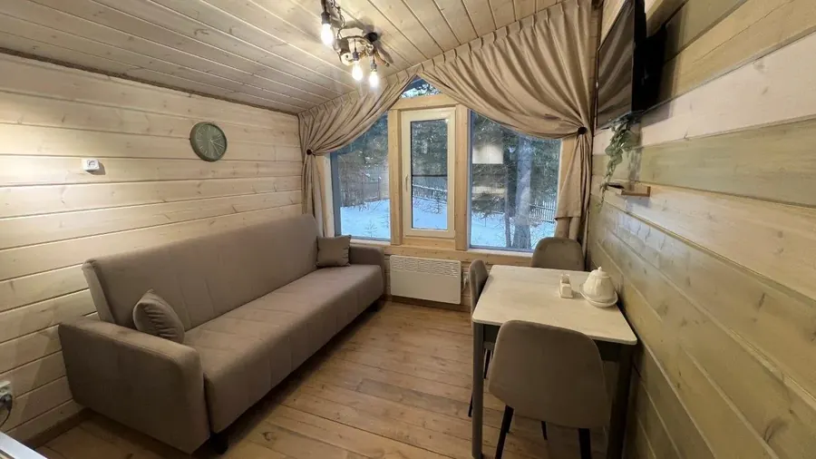
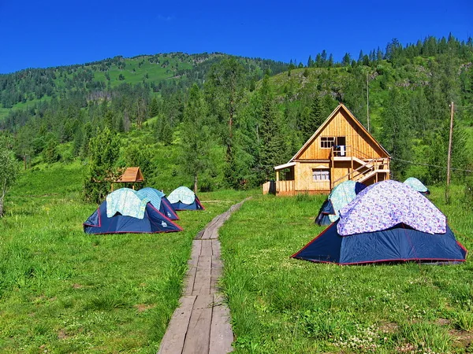
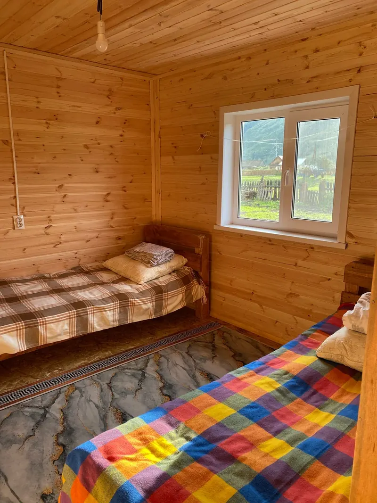
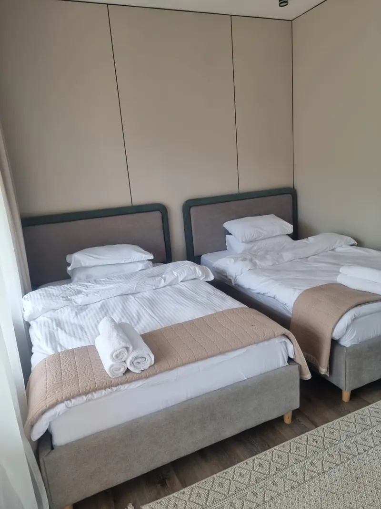
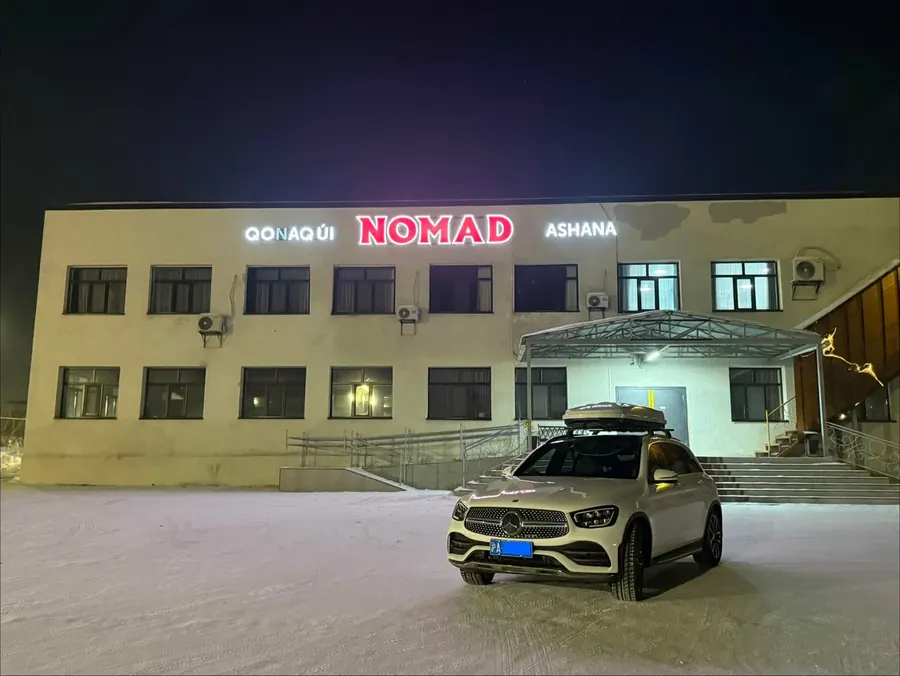
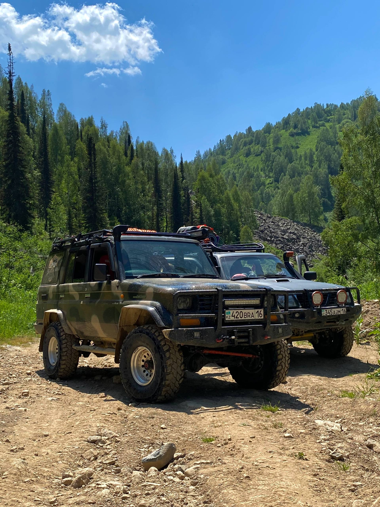
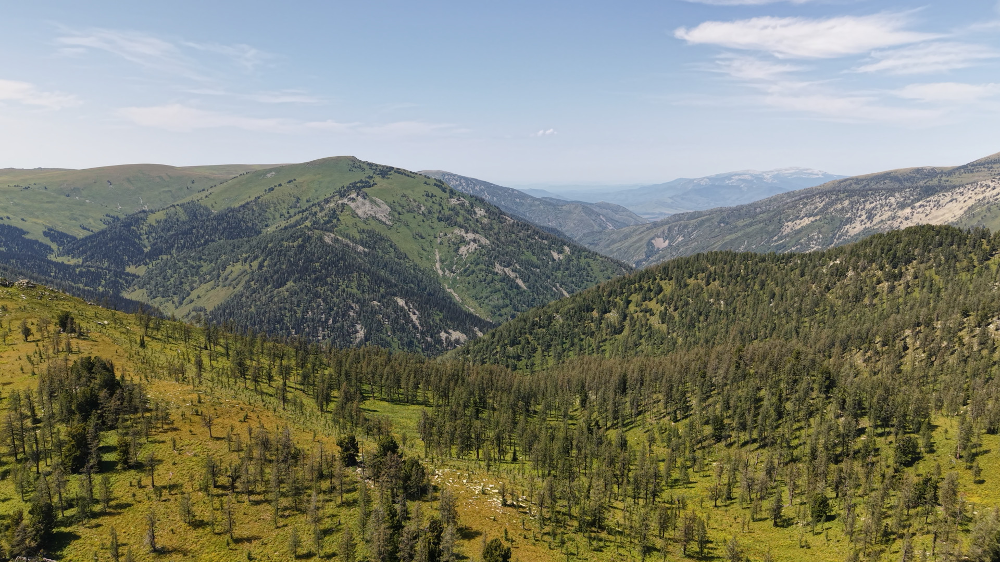
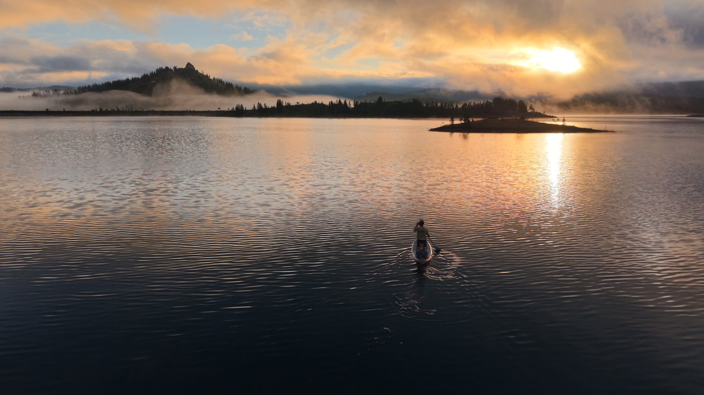

Мамыр — қазан
Жаз
- Бүкіл Шығыс Қазақстан бойынша жеке маршруттар
- Катонқарағай, Марқакөл, Рахман қайнары
- Риддерден тауға бір күндік джип-турлар
- Балық аулау, өзенмен ағу, атпен және жаяу маршруттар
Сапарды толық ұйымдастырамыз: маршрут, көлік, гидтер, тұру, тамақ және рұқсат қағаздары. Жазда — жол талғамайтын көлікпен Алтай бойынша, қыста — ратрак пен снегоходпен. Өскемен әуежайында күтіп аламыз және қайта шығарып саламыз.
Қысқы бағдарламалардың күндері мен бағалары нақтылануда — бізге жазыңыз, дайын болғанда жібереміз.
Қысқы бағдарламалар →Әр сапар жеке ұйымдастырылады. Күндеріңізді және сіз үшін не маңызды екенін айтыңыз — күн-күнімен бағдарлама мен бағаны жібереміз.
Әуежайда күтіп алу, аялдамалармен Алтайға жол, ауылдағы қонақүйге орналасу.
Таңертең атпен серуен және марал шаруашылығы, содан кейін көлге жол. Жағадағы үй және монша.
Көлде балық аулау және SUP, содан кейін қайнарлар. Сарқырамаға қайықпен бару, қалауыңызша — радон ванналары.
Мұзтауға көрінісі бар 3–4 сағаттық жаяу маршрут. Кешке Берелде садақ ату және монша.
Ескі Австрия жолы — шамамен алты сағат тау жолы. Көл жағасында от басында кешкі ас.
Таңертең Марқакөлде, содан кейін далаға түсу және сазды шатқалдар. Кешке Зайсанда.
Таңертең ерте әуежайға, шекараға немесе келесі бағытыңызға трансфер.
Бір сапарда таулар, көлдер, тайга, қайнарлар және шөл.
Өскемен әуежайында күтіп аламыз, бүкіл маршрут бойы алып жүреміз және қайта жеткіземіз — әуежайға, шекараға немесе келесі бағытқа.
Әр түнге тұратын орын алдын ала брондалып, расталады — қонақ үйлер, эко-қонақүйлер және көл жағасындағы үйлер; бәрінде өзіміз болғанбыз.
Гид дайындалған жол талғамайтын көлікті жүргізеді: өткелдер, тасты өрлер, асулар. Бір көлікте 4 қонаққа дейін.
Тамақ — бағдарлама бойынша. Ат, балық аулау, SUP, жаяу серуен, монша, қайық — маршрут мүмкіндік беретін жерлерде.
Ұлттық паркке және шекара аймағына рұқсат қағаздарын біз рәсімдейміз. Шетелдік қонақтарға уақыт керек — күндерді ертерек хабарлаңыз.
Ұялы байланыс жоқ жерлерде Starlink спутниктік интернеті мен Thuraya телефоны бар. Ауа райына байланысты қосалқы жоспар дайын.
Тек бір бөлігі керек пе? Қонақүй, трансфер, гид және рұқсат қағаздарын бөлек тапсырыс беруге болады — Шығыс Қазақстан бойынша өз жоспарыңызға сай.
Біз тоқтайтын бірнеше база, үй және қонақүй. Тұратын орын әр сапарға бөлек расталады.






WhatsApp, Telegram немесе төмендегі форма арқылы жазыңыз. Жұмыс уақытында бір сағат ішінде жауап береміз.
Тұру, тамақ және бағасы көрсетілген күн-күнімен маршрут жібереміз. Тобыңызға сай келгенше түзетеміз.
Алдын ала төлем күндер мен тұратын орынды бекітеді. Төлем тәсілін сізбен келісеміз.
Күтіп аламыз және кеткенше бірге боламыз.








Asferia Adventure — Шығыс Қазақстан, Риддер қаласындағы лицензиясы бар туроператор. 2023 жылдан бері қонақтарды Алтай тауларына апарамыз: көлдерге, асуларға, сарқырамаларға және өңірдің ұлттық парктеріне.
Сапарды толық ұйымдастырамыз: гидтер, дайындалған жол талғамайтын көліктер, серіктестердегі тұру, трансфер, рұқсат қағаздары. Бір бронь — бір байланыс.
Бір күндік турларда түскі ас Риддердегі «Крем» кафесінен, ол бағаға кіреді.

Бүкіл Шығыс Қазақстан бойынша: Риддер маңындағы Батыс Алтай, Катонқарағай ұлттық паркі, Марқакөл мен Язевое көлдері, Рахман қайнары, Зайсан маңындағы Киін-Керіш шатқалдары. Компанияның базасы — Риддерде, Өскеменнен 120 км.
Жазғы маусым — мамырдың соңынан қазанға дейін; биік таулы аймақ маусымның ортасынан қыркүйектің ортасына дейін толық ашық. Ратрак пен снегоходтағы қысқы бағдарламалар желтоқсаннан наурызға дейін өтеді.
Көлік, гид, маршруттағы тамақ және белсенді демалысқа арналған жабдық. Көп күндік бағдарламаларда — нақты сапардың шарты бойынша тұру. Құрамы төлемге дейін жіберетін бағдарламада әрқашан жазылады.
Өскеменге дейін ұшақпен немесе пойызбен. Сол жерден өзіміз алып кетеміз: трансфер бағдарламаға кіреді немесе Риддерден шығатын бір күндік турлар үшін бөлек есептеледі.
Күндеріңізді және топ құрамын жазыңыз. Бағдарлама мен бағаны жібереміз; күндер алдын ала төлеммен бекітіледі.
Қашан келгіңіз келетінін және сіз үшін не маңызды екенін жазыңыз. Жұмыс уақытында бір сағат ішінде жауап беріп, бағасы бар бағдарлама жібереміз.
«Кез келген мессенджерге жазыңыз — жұмыс уақытында бір сағат ішінде жауап беремін».